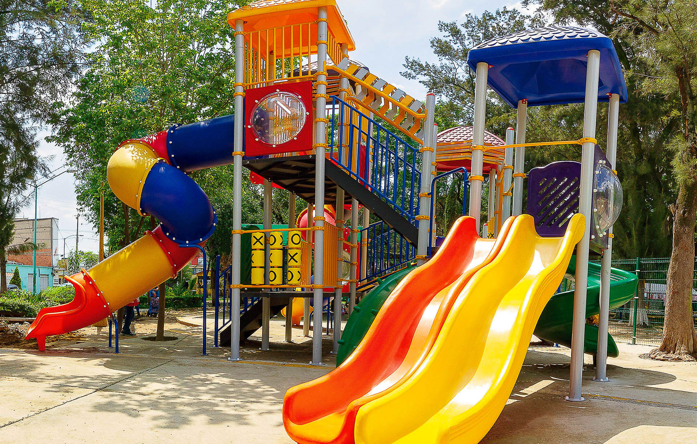
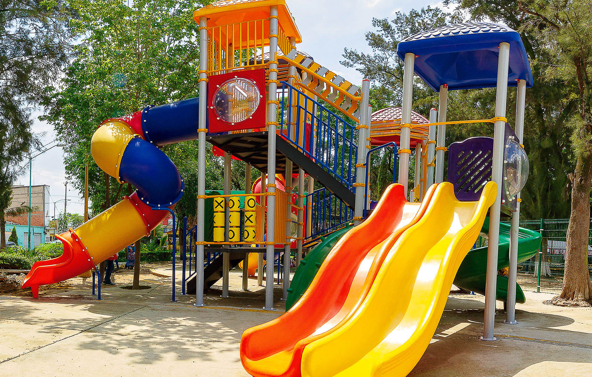
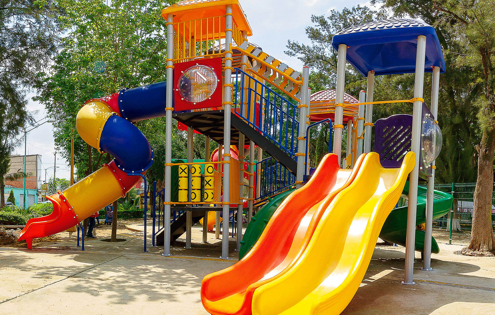

Galería clásica
Disposición en rejilla, se adapta al ancho del dispositivo.

 



Tres Estilos: Horizontal - Vertical - Galería tipo Abanico.
Disposición en rejilla, se adapta al ancho del dispositivo.

Imágenes verticalmente.
Tarjetas ligeramente giradas en abanico; al pasar/abrir, se enderezan y puedes ampliar.